<meta charset="utf-8">
<title>베를린 도보 4시간, 입장료 0원 코스 — 나의 투자 그리고 행복한 여행</title>
<meta name="description" content="체크포인트 찰리, 포츠다머 플라츠, 홀로코스트 추모비, 브란덴부르크문, 국회의사당, 젠다르멘마르크트를 잇는 베를린 무료 도보 코스와 예약 정보.">
<meta name="viewport" content="width=device-width, initial-scale=1">
<link rel="canonical" href="https://worldtraveler1.tistory.com/73">
<link rel="preconnect" href="https://fonts.googleapis.com">
<link rel="preconnect" href="https://fonts.gstatic.com" crossorigin>
<link rel="stylesheet" href="https://fonts.googleapis.com/css2?family=Hahmlet:wght@400;600;800&family=IBM+Plex+Mono:wght@400;500&family=IBM+Plex+Sans+KR:wght@300;400;500;600&display=swap">

<style>
  :root{
    --paper:#F2EEE6;--surface:#FAF8F3;--surface-2:#E7E1D5;
    --ink:#191510;--ink-2:#4A4235;--ink-3:#7D7364;
    --line:#D6CEBF;--line-soft:#E4DDD0;--accent:#B06A15;--accent-bright:#C2761A;
    --up:#E5484D;--down:#3B82F6;
    --f-display:"Hahmlet",'Nanum Myeongjo',"Apple SD Gothic Neo",serif;
    --f-body:"IBM Plex Sans KR","Apple SD Gothic Neo","Malgun Gothic",sans-serif;
    --f-mono:"IBM Plex Mono","SFMono-Regular",Consolas,monospace;
    --pad:clamp(20px,5vw,64px);
  }
  @media (prefers-color-scheme:dark){
    :root:not([data-theme="light"]){
      --paper:#0B1120;--surface:#121A2C;--surface-2:#1A2439;
      --ink:#E9EEF7;--ink-2:#A9B5C9;--ink-3:#72809A;
      --line:#26314A;--line-soft:#1D2739;--accent:#E8A33D;--accent-bright:#F0B45C;
    }
  }
  *{box-sizing:border-box;}
  body{margin:0;background:var(--paper);color:var(--ink);font-family:var(--f-body);
    font-weight:300;font-size:1rem;line-height:1.75;-webkit-font-smoothing:antialiased;}
  a{color:inherit;}
  img{max-width:100%;height:auto;}
  .wrap{max-width:760px;margin:0 auto;padding-inline:var(--pad);}
  .nav{position:sticky;top:0;z-index:20;background:color-mix(in srgb,var(--paper) 88%,transparent);
    backdrop-filter:saturate(180%) blur(12px);border-bottom:1px solid var(--line);}
  .nav-in{display:flex;align-items:center;justify-content:space-between;height:58px;}
  .brand{font-family:var(--f-display);font-weight:600;font-size:1rem;letter-spacing:-.02em;text-decoration:none;}
  .back{font-family:var(--f-mono);font-size:.72rem;color:var(--ink-3);text-decoration:none;}
  .article{padding-block:clamp(40px,7vw,72px) clamp(56px,9vw,96px);}
  .eyebrow{font-family:var(--f-mono);font-size:.68rem;letter-spacing:.16em;text-transform:uppercase;
    color:var(--accent);margin:0 0 14px;}
  h1{font-family:var(--f-display);font-weight:800;font-size:clamp(1.6rem,4.4vw,2.3rem);
    line-height:1.3;letter-spacing:-.03em;margin:0 0 16px;}
  .byline{font-family:var(--f-mono);font-size:.72rem;color:var(--ink-3);
    padding-bottom:24px;border-bottom:1px solid var(--line);margin-bottom:32px;}
  h2{font-family:var(--f-display);font-weight:600;font-size:1.25rem;letter-spacing:-.02em;margin:42px 0 14px;}
  h3{font-family:var(--f-display);font-weight:600;font-size:1.05rem;letter-spacing:-.02em;
    margin:30px 0 10px;padding-top:14px;border-top:1px solid var(--line-soft);}
  h3 .code{font-family:var(--f-mono);font-size:.7rem;font-weight:400;color:var(--ink-3);margin-left:6px;}
  p{margin:0 0 18px;color:var(--ink-2);}
  ul.checks{margin:0 0 18px;padding-left:20px;color:var(--ink-2);}
  ul.checks li{margin-bottom:8px;font-size:.94rem;}
  table{width:100%;border-collapse:collapse;font-size:.88rem;margin-bottom:8px;}
  th{font-family:var(--f-mono);font-size:.66rem;letter-spacing:.06em;text-transform:uppercase;
    color:var(--ink-3);text-align:right;padding:8px 6px;border-bottom:1px solid var(--line);}
  th:first-child{text-align:left;}
  td{padding:10px 6px;border-bottom:1px solid var(--line-soft);color:var(--ink-2);}
  td.num{font-family:var(--f-mono);text-align:right;font-variant-numeric:tabular-nums;}
  td.up{color:var(--up);} td.down{color:var(--down);}
  .scroll{overflow-x:auto;}
  figure{margin:22px 0;}
  figure img{display:block;border-radius:3px;background:var(--surface-2);}
  figcaption{margin-top:8px;font-family:var(--f-mono);font-size:.68rem;color:var(--ink-3);text-align:center;}
  .note{margin-top:34px;padding:16px 18px;border-left:3px solid var(--accent);
    background:var(--surface);border-radius:0 3px 3px 0;}
  .note p{margin:0;font-size:.85rem;color:var(--ink-3);}
  .foot{border-top:1px solid var(--line);background:var(--surface);padding-block:30px 38px;}
  .foot p{margin:0;font-size:.8rem;color:var(--ink-3);}
</style>

<nav class="nav">
  <div class="wrap nav-in">
    <a class="brand" href="../index.html">나의 투자 그리고 행복한 여행</a>
    <a class="back" href="../index.html#stocks">← 시황으로</a>
  </div>
</nav>

<main class="wrap article">
  <p class="eyebrow">Market</p>
  <h1>베를린 도보 코스 기록 (2026.5.23) — 사진 시각 기준 타임라인</h1>
  <p class="byline">여행 · 2026-09-16 기준</p>

  <p>한 줄 요약: 체크포인트 찰리(11:03) → 포츠다머 플라츠(11:29) → 홀로코스트 추모비·정보의 장소(12:02~12:40) → 브란덴부르크문(12:54~13:13) → 신티·로마 추모지(13:18) → 국회의사당(13:51) → 젠다르멘마르크트(14:29~15:07). 총 4시간 4분, 입장료 0유로.</p>
  <p>시각은 모두 사진 촬영 시각(중부유럽 여름시각)입니다. 요금·운영 정보는 2026년 9월 16일 확인값입니다.</p>
  <p>※ 이 글에는 클룩 제휴 링크가 들어 있습니다. 링크를 통해 예약하시면 글쓴이가 일정 수수료를 받을 수 있으며, 예약하시는 가격은 같습니다.</p>
  <p>※ 이 포스팅은 쿠팡 파트너스 활동의 일환으로, 이에 따른 일정액의 수수료를 제공받습니다.</p>
  <h2>도보 타임라인 (5월 23일)</h2>
  <ul class="checks">
    <li>11:03~11:06  체크포인트 찰리 — 초소 복제물, 장벽박물관 앞</li>
    <li>11:29~11:48  포츠다머 플라츠 — 유럽 최초 교통신호탑 복제물</li>
    <li>12:02~12:14  홀로코스트 추모비 석비 밭</li>
    <li>12:21~12:40  지하 '정보의 장소' 전시 (무료)</li>
    <li>12:54~13:13  브란덴부르크문, 파리저 광장</li>
    <li>13:18  신티·로마 추모지 — 원형 못</li>
    <li>13:51  국회의사당 정면</li>
    <li>14:29~15:07  젠다르멘마르크트 — 독일 돔, 콘체르트하우스, 프랑스 돔</li>
  </ul>
  <div class="note"><p>구간 이동은 전부 도보였습니다. 체크포인트 찰리에서 젠다르멘마르크트까지 한 바퀴가 대략 5km 남짓입니다.</p></div>
  <h2>체크포인트 찰리 — 5분이면 충분한 곳</h2>
  <figure>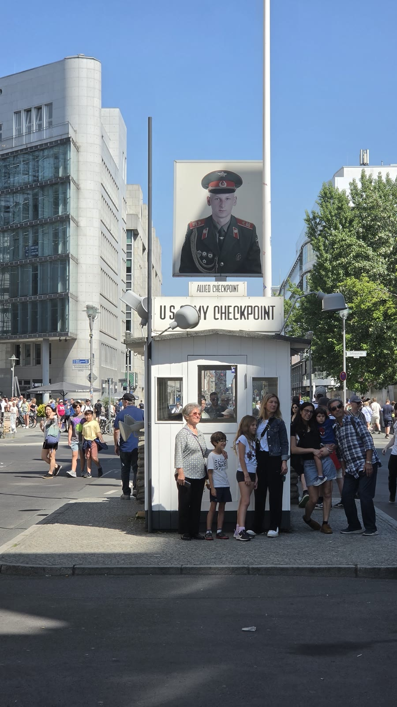<figcaption>오전 11시 3분 체크포인트 찰리. 미군 검문소 초소는 복제물이고, 사진 찍는 줄이 늘 서 있습니다.</figcaption></figure>
  <p>냉전 시절 동서 베를린을 오가던 연합군 검문소 자리입니다. 지금 서 있는 초소와 병사 사진판은 복제물입니다.</p>
  <figure>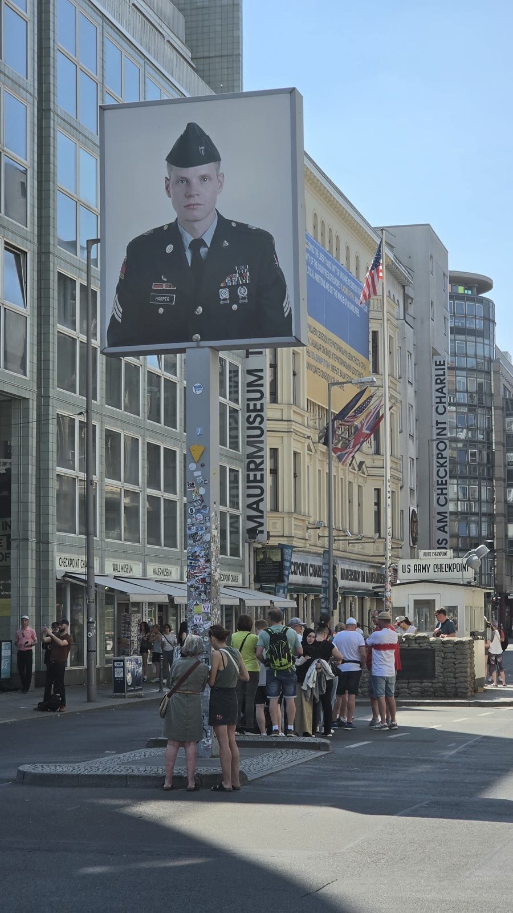<figcaption>오전 11시 6분. 길 건너에 장벽박물관(Mauermuseum) 간판이 보입니다. 이 박물관은 유료입니다.</figcaption></figure>
  <p>솔직히 말하면 길 한가운데 있는 사진 촬영 장소에 가깝습니다. 저도 3분 만에 지나갔습니다. 장벽의 실물을 보고 싶다면 이스트사이드갤러리나 베르나우어 거리 쪽이 낫습니다.</p>
  <p>대신 이 일대의 역사 맥락을 제대로 들으려면 도보 투어가 효율이 좋습니다. 냉전과 장벽을 주제로 한 반나절 투어가 이 구간을 그대로 지나갑니다.</p>
  <div style="text-align:center;margin:30px 0"><a href="https://affiliate.klook.com/redirect?aid=135164&aff_adid=1433458&k_site=https%3A%2F%2Fwww.klook.com%2Fko%2Factivity%2F117786-the-third-reich-and-cold-war-walking-tour-in-berlin%2F" target="_blank" rel="nofollow sponsored noopener" style="display:inline-block;padding:15px 28px;background:#E34948;color:#fff;font-weight:700;font-size:18px;text-decoration:none;border-radius:8px"><b>▶ 베를린 장벽·냉전 도보 투어 확인하기</b></a></div>
  <h2>포츠다머 플라츠 — 유럽 최초의 교통신호등이 서 있던 자리</h2>
  <figure>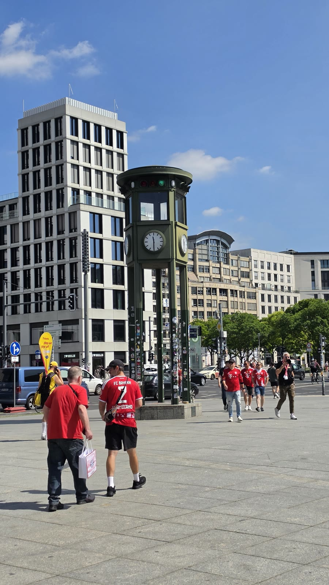<figcaption>오전 11시 29분 포츠다머 플라츠. 유리 고층 건물 사이에 초록색 오각형 탑이 서 있습니다.</figcaption></figure>
  <p>이 탑은 1924년 유럽 최초로 세워진 교통신호탑의 복제물입니다. 당시 이 광장이 유럽에서 가장 붐비는 교차로였습니다.</p>
  <p>장벽 시절에는 이 일대가 통째로 무인지대였습니다. 지금 서 있는 유리 건물들은 통일 이후에 새로 지은 것입니다. 같은 자리에서 '가장 붐비는 교차로 → 무인지대 → 신도시'가 한 세기 안에 다 일어났습니다.</p>
  <p>체크포인트 찰리에서 여기까지 26분 걸었습니다.</p>
  <h2>홀로코스트 추모비와 지하 정보의 장소 — 무료, 38분</h2>
  <figure>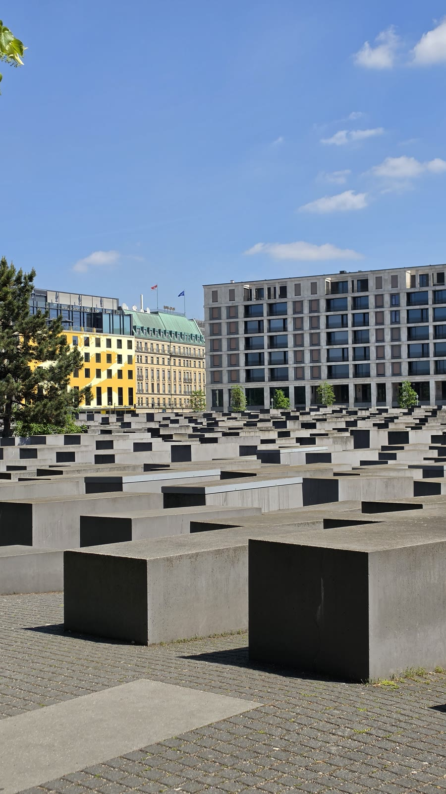<figcaption>낮 12시 2분. 회색 콘크리트 기둥 2,711개가 기울어진 바닥 위에 늘어서 있습니다.</figcaption></figure>
  <p>정식 이름은 '학살된 유럽 유대인을 위한 추모비'입니다. 1만 9,000㎡ 부지에 2,711개의 콘크리트 석비가 서 있고, 미국 건축가 페터 아이젠만이 설계했습니다.</p>
  <p>안내판도, 이름도, 설명도 없습니다. 그냥 들어가서 걷습니다.</p>
  <figure>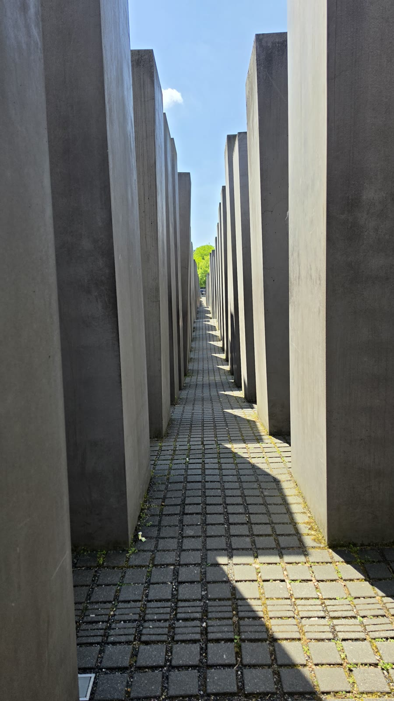<figcaption>낮 12시 6분, 석비 사이 통로. 바닥이 파도처럼 오르내려서 안쪽으로 들어가면 하늘만 보입니다.</figcaption></figure>
  <p>가운데로 들어갈수록 기둥이 키를 넘어섭니다. 밖에서 볼 때는 무릎 높이였던 것이 안에서는 4m가 넘습니다. 소리가 차단되고 방향 감각이 사라집니다.</p>
  <figure>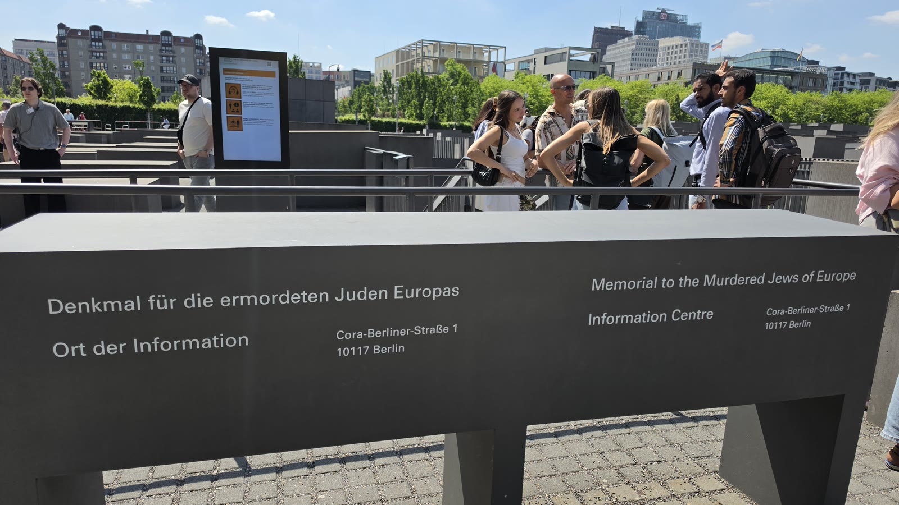<figcaption>낮 12시 14분. 석비 밭 아래에 '정보의 장소(Ort der Information)' 입구가 있습니다. 코라-베를리너-슈트라세 1번지.</figcaption></figure>
  <p><b>입장료는 없습니다.</b> 화요일~일요일 10시~18시, 마지막 입장은 17시 15분이고 월요일은 휴관입니다. 지하 전시는 보수 공사로 닫히는 기간이 있으니(2026년에도 1월 12일~4월 30일 휴관했습니다) 가기 전에 확인하는 편이 안전합니다.</p>
  <figure>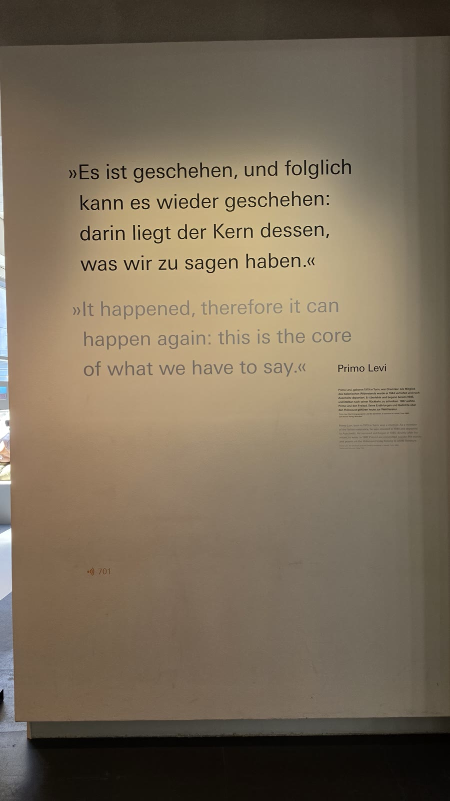<figcaption>낮 12시 21분. '그것은 일어났고, 따라서 다시 일어날 수 있다. 우리가 말해야 할 것의 핵심이 여기 있다' — 프리모 레비.</figcaption></figure>
  <figure>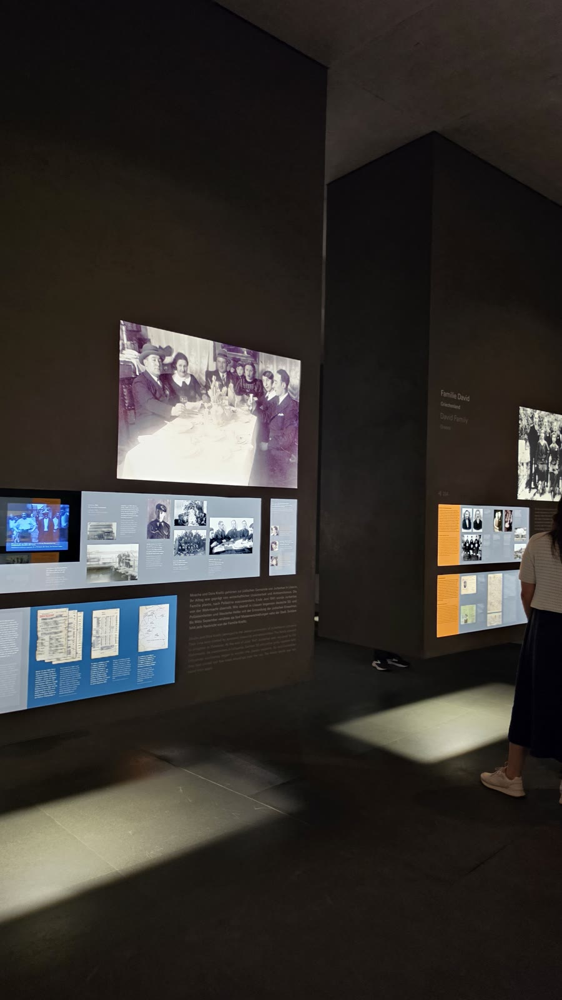<figcaption>낮 12시 26분 전시실. 어두운 공간에 가족 사진과 편지가 이어집니다.</figcaption></figure>
  <p>전시는 통계가 아니라 개인을 따라갑니다. 한 사람, 한 가족의 이름과 편지와 사진이 방마다 이어집니다. 천장에서 이름이 낭독됩니다.</p>
  <p>저는 12시 2분에 석비 밭에 들어가 12시 40분에 나왔습니다. <b>38분</b>입니다. 이날 코스에서 가장 오래 머문 곳이고, 무료였습니다.</p>
  <div class="note"><p>베를린에서 한 곳만 고르라면 저는 여기를 고르겠습니다. 다만 아이와 함께라면 지하 전시는 미리 이야기를 해 두는 편이 낫습니다.</p></div>
  <h2>브란덴부르크문 — 그리고 하필 그날이 포칼 결승일이었습니다</h2>
  <figure>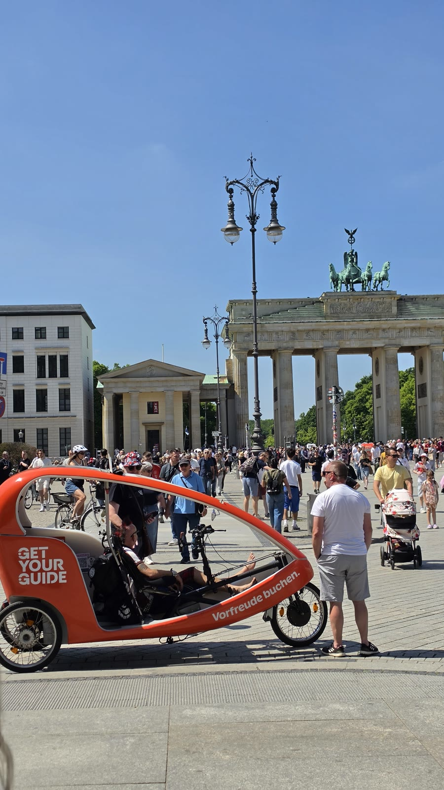<figcaption>낮 12시 54분 브란덴부르크문 동쪽. 앞에 인력거와 사람들이 가득합니다.</figcaption></figure>
  <figure>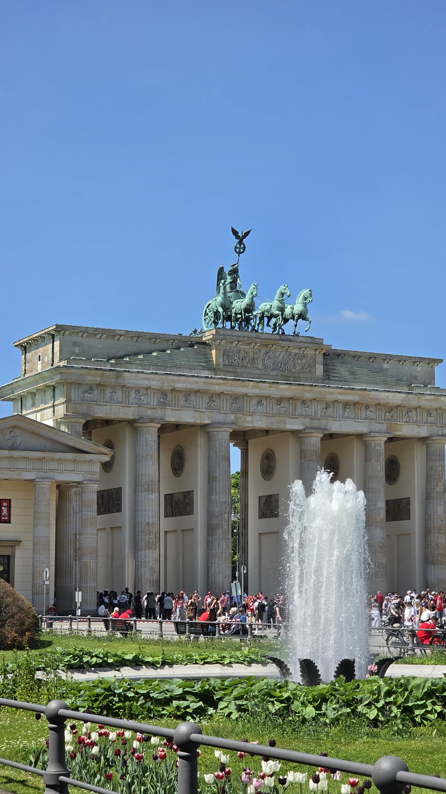<figcaption>오후 1시 0분. 파리저 광장 쪽 분수와 문 위의 사두마차(콰드리가).</figcaption></figure>
  <p>문 자체는 24시간 열려 있고 요금이 없습니다. 홀로코스트 추모비에서 걸어서 14분 거리입니다.</p>
  <figure>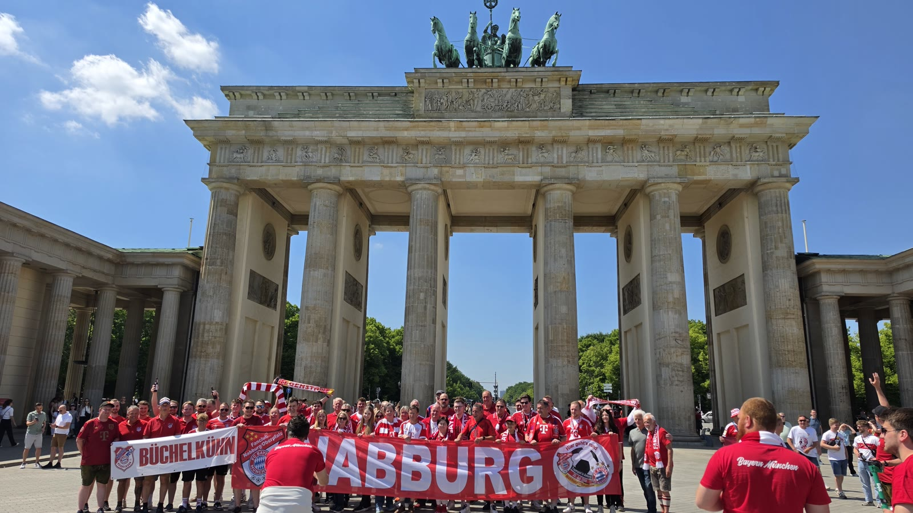<figcaption>오후 1시 8분. 붉은 셔츠와 현수막. 확대해 보니 바이에른 뮌헨 팬클럽(뷔헬퀸, 나부르크/오버팔츠) 이름이 적혀 있습니다.</figcaption></figure>
  <p>2026년 5월 23일은 베를린 올림피아슈타디온에서 DFB포칼(독일 축구협회컵) 결승이 열린 날이었습니다. 바이에른 뮌헨과 슈투트가르트 경기였고, 도심이 원정 팬으로 가득했습니다.</p>
  <p>독일 포칼 결승은 매년 5월 베를린에서 고정으로 열립니다. 알고 가면 재미있는 구경이지만, 모르고 그 주말에 일정을 잡으면 숙소값과 혼잡에서 그대로 부딪힙니다.</p>
  <ul class="checks">
    <li>5월 중하순 주말 베를린 일정이라면 그해 포칼 결승 날짜를 먼저 확인하세요</li>
    <li>그날은 브란덴부르크문·알렉산더광장 같은 도심 광장이 가장 붐빕니다</li>
    <li>반대로 박물관과 추모시설은 평소와 비슷합니다. 실내 일정으로 피할 수 있습니다</li>
  </ul>
  <h2>신티·로마 추모지 — 문 바로 옆인데 대부분 그냥 지나칩니다</h2>
  <figure>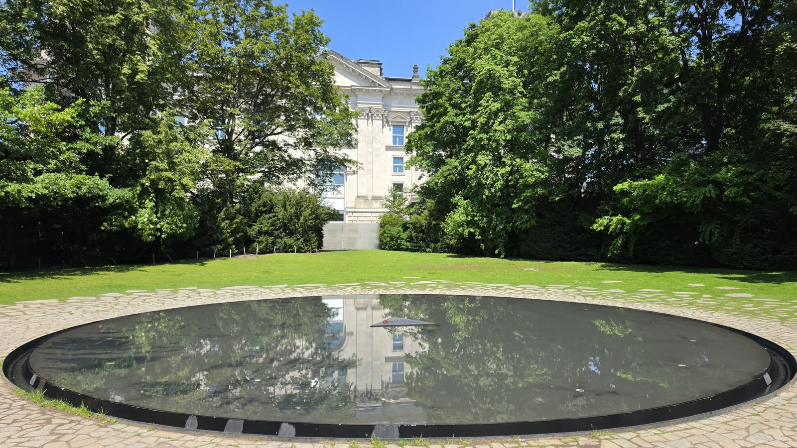<figcaption>오후 1시 18분. 나무에 둘러싸인 검은 원형 못. 가운데에 매일 꽃 한 송이가 놓입니다.</figcaption></figure>
  <p>브란덴부르크문에서 국회의사당 쪽으로 5분만 걸으면 나옵니다. 나치 시대에 학살된 신티·로마(집시)를 위한 추모지입니다.</p>
  <p>검은 물이 담긴 원형 못 하나가 전부입니다. 가운데 삼각형 받침 위에 꽃 한 송이가 매일 새로 놓이고, 둘레에 학살지 이름이 새겨져 있습니다.</p>
  <p>입장료도 없고 안내도 거의 없어서 사람이 적습니다. 브란덴부르크문에서 국회의사당으로 가는 길목이라 동선에 자연스럽게 들어갑니다.</p>
  <h2>국회의사당 — 돔은 무료지만 예약이 없으면 못 올라갑니다</h2>
  <figure>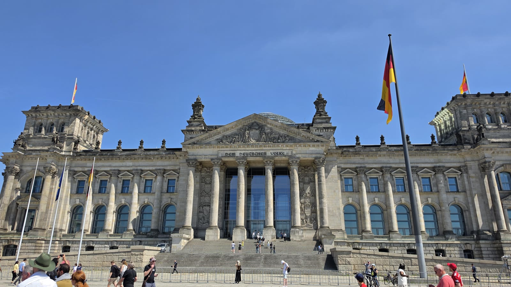<figcaption>오후 1시 51분 국회의사당 정면. 독일 국기 세 개가 걸려 있고 잔디밭에 사람들이 앉아 있습니다.</figcaption></figure>
  <p>유리 돔 전망대와 옥상 테라스는 <b>무료</b>입니다. 다만 사전 등록이 반드시 필요합니다. 연방의회 방문자 서비스 홈페이지에서 이름·생년월일을 넣고 예약한 뒤, 예약할 때 쓴 신분증 원본(한국인은 여권)을 그대로 가져가야 합니다.</p>
  <p>매일 8시부터 자정까지 열고 마지막 입장은 21시 45분입니다. 여름 성수기에는 오전 10시~오후 2시 시간대가 공개 첫 주에 마감됩니다.</p>
  <p>저는 예약을 해 두지 않아서 바깥에서만 봤습니다. 이 글의 사진도 정면뿐입니다. 베를린 일정을 잡을 때 <b>가장 먼저 예약해야 하는 것</b>이 이 돔입니다.</p>
  <ul class="checks">
    <li>예약은 visite.bundestag.de 에서 무료로 합니다</li>
    <li>예약자 이름과 신분증이 정확히 일치해야 입장됩니다</li>
    <li>돔은 청소·정비로 며칠씩 닫습니다(2026년에는 9월 14~18일, 9월 28일~10월 2일, 10월 19~30일). 이때도 옥상 테라스는 열립니다</li>
  </ul>
  <h2>젠다르멘마르크트 — 콘체르트하우스 대강당은 낮에 무료로 들여다볼 수 있습니다</h2>
  <figure>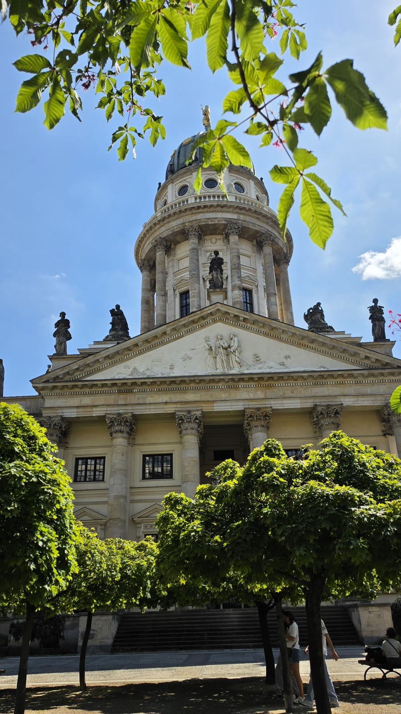<figcaption>오후 2시 29분 독일 돔. 광장 남쪽에 서 있습니다.</figcaption></figure>
  <p>베를린에서 가장 잘 정돈된 광장으로 꼽힙니다. 남쪽에 독일 돔, 북쪽에 프랑스 돔, 가운데에 콘체르트하우스가 대칭으로 서 있습니다.</p>
  <figure>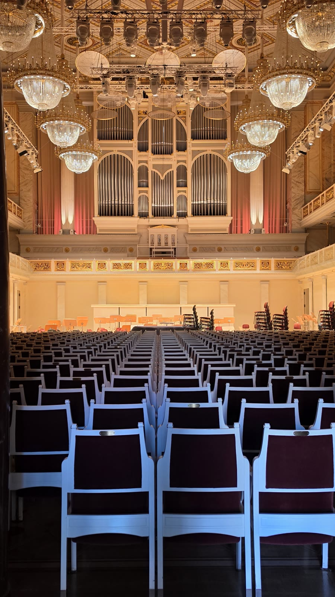<figcaption>오후 2시 48분, 콘체르트하우스 대강당. 객석과 파이프오르간이 그대로 보입니다.</figcaption></figure>
  <p>여기가 이날의 작은 발견이었습니다. 콘체르트하우스는 <b>낮 시간(대개 11시~18시)에 대강당 안을 무료로 들여다볼 수 있습니다.</b> 공연이나 리허설이 없는 시간에 한해서입니다.</p>
  <p>제대로 설명을 듣고 싶으면 75분짜리 가이드 투어가 있고 1인 3유로입니다. 독일어로 진행되며 날짜가 정해져 있으니 공식 홈페이지에서 확인해야 합니다.</p>
  <figure>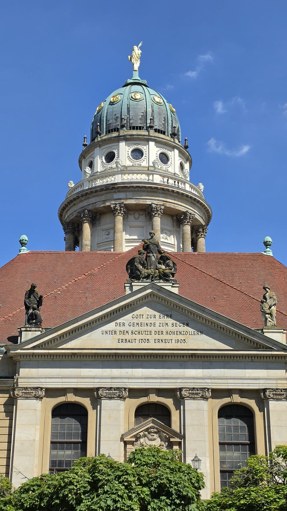<figcaption>오후 3시 7분 프랑스 돔. 이날 도보 코스의 마지막 사진입니다.</figcaption></figure>
  <p>프랑스 돔은 17세기에 종교 박해를 피해 베를린으로 온 위그노(프랑스 개신교도)를 위해 지은 교회입니다. 전망대는 별도 요금이 있습니다.</p>
  <h2>남들이 잘 안 쓰는 이야기 — 베를린 하루를 0원으로 짜는 법</h2>
  <p>이날 4시간 코스에서 제가 낸 입장료가 없습니다. 우연이 아니라 베를린이 원래 그런 도시입니다.</p>
  <ul class="checks">
    <li>이스트사이드갤러리 — 야외 담장, 요금·개장시간 없음</li>
    <li>체크포인트 찰리 — 길 위, 무료 (장벽박물관만 유료)</li>
    <li>포츠다머 플라츠 신호등탑 — 길 위, 무료</li>
    <li>홀로코스트 추모비와 지하 정보의 장소 — 무료 (월 휴관)</li>
    <li>브란덴부르크문·파리저 광장 — 무료</li>
    <li>신티·로마 추모지 — 무료</li>
    <li>국회의사당 돔·옥상 — 무료 (사전 예약 필수)</li>
    <li>젠다르멘마르크트, 콘체르트하우스 대강당 낮 관람 — 무료</li>
  </ul>
  <p>돈이 드는 건 대부분 '올라가는 것'과 '박물관'입니다. TV탑 전망대(온라인 24.50유로부터), 베를린 대성당(성인 15유로), 박물관섬 입장권, 장벽박물관, 프랑스 돔 전망대 같은 것들입니다.</p>
  <div class="note"><p>그래서 베를린 예산의 변수는 입장료가 아니라 교통비와 숙박비입니다. 도심 안에서만 움직이면 AB 24시간권 11.20유로 한 장으로 하루가 끝납니다.</p></div>
  <p>도심 도보 코스만 돌 거라면 사실 교통권도 크게 필요 없습니다. 이날은 여덟 곳을 전부 걸어서 이었고, 필요했다면 AB 1회권 4.00유로(약 6,500원)면 충분했습니다.</p>
  <h2>이 코스가 맞는 사람, 안 맞는 사람</h2>
  <ul class="checks">
    <li>맞음 — 역사와 맥락을 좋아하고, 하루 5~6km 걷는 데 무리가 없는 분</li>
    <li>맞음 — 예산을 줄이면서 핵심은 다 보고 싶은 분</li>
    <li>안 맞음 — 걷는 게 부담이면 홉온홉오프 버스나 구간 대중교통으로 나눠야 합니다</li>
    <li>안 맞음 — 쇼핑·미식 중심 여행이라면 이 동선은 지루할 수 있습니다</li>
    <li>참고 — 추모시설이 연달아 나옵니다. 어린아이와 함께라면 순서를 조정하는 편이 낫습니다</li>
  </ul>
  <p>발은 확실히 고생합니다. 베를린 도심은 보도블록과 오래된 석재 포장이 섞여 있어서 쿠션이 얇은 신발이면 오후에 티가 납니다.</p>
  <div style="text-align:center;margin:30px 0"><a href="https://link.coupang.com/a/g5qtArxUf6" target="_blank" rel="nofollow sponsored noopener" style="display:inline-block;padding:15px 28px;background:#E34948;color:#fff;font-weight:700;font-size:18px;text-decoration:none;border-radius:8px"><b>▶ 여행용 쿠션 깔창 보러 가기</b></a></div>
  <p>소매치기 이야기도 빼놓을 수 없습니다. 브란덴부르크문과 알렉산더광장처럼 사람이 몰리는 곳은 유럽 어느 도시와 마찬가지로 조심해야 합니다. 가방은 앞으로 메는 편이 편합니다.</p>
  <h2>자주 묻는 질문</h2>
  <p><b>베를린 도심 하루 코스는 몇 시간 잡아야 하나요?</b></p>
  <p>이 여덟 곳을 이으면 4시간 남짓입니다. 국회의사당 돔에 올라가거나 박물관을 하나 넣으면 6시간으로 늘어납니다.</p>
  <p><b>홀로코스트 추모비는 입장료가 있나요?</b></p>
  <p>없습니다. 석비 밭은 24시간 열려 있고, 지하 '정보의 장소' 전시도 무료입니다. 화~일 10시~18시, 마지막 입장 17시 15분, 월요일 휴관입니다.</p>
  <p><b>국회의사당 돔은 어떻게 예약하나요?</b></p>
  <p>연방의회 방문자 서비스 홈페이지(visite.bundestag.de)에서 무료로 예약합니다. 이름과 생년월일을 넣고, 당일에는 예약할 때 쓴 신분증 원본을 가져가야 합니다. 한국인은 여권입니다.</p>
  <p><b>체크포인트 찰리는 볼 만한가요?</b></p>
  <p>초소와 병사 사진판이 모두 복제물입니다. 사진만 찍으면 5분이면 끝납니다. 장벽 실물을 보려면 이스트사이드갤러리 쪽이 낫습니다.</p>
  <p><b>5월 베를린은 사람이 많은가요?</b></p>
  <p>5월 중하순 주말에는 DFB포칼 결승이 베를린에서 열립니다. 그 주말은 도심 광장이 유난히 붐비고 숙소값도 오릅니다. 날짜를 먼저 확인하는 게 좋습니다.</p>
  <h2>정리하면</h2>
  <p>베를린 도심은 걸어서 잇는 도시입니다. 체크포인트 찰리에서 젠다르멘마르크트까지 4시간, 그 사이에 냉전·나치·통일이 다 들어 있습니다.</p>
  <p>돈은 거의 들지 않습니다. 대신 미리 해야 할 일이 하나 있습니다. 국회의사당 돔 예약입니다.</p>
  <p>다음 글에서는 베를린에서 기차로 한 시간 반 거리인 라이프치히를 정리하겠습니다.</p>
  <div style="text-align:center;margin:30px 0"><a href="https://danielmoon82.github.io/moon/posts/berlin-first-evening-course-2026-09-16.html" target="_blank" rel="nofollow sponsored noopener" style="display:inline-block;padding:15px 28px;background:#E34948;color:#fff;font-weight:700;font-size:18px;text-decoration:none;border-radius:8px"><b>▶ 베를린 도착 첫날 저녁 코스 보기</b></a></div>
  <p style="font-size:12px;color:#999;line-height:1.6;margin-top:36px">방문 날짜와 시각은 2026년 5월 22~24일 여행 중 찍은 사진의 촬영 시각(중부유럽 현지 시각)으로 확인했습니다. 요금·운영 시간은 2026년 9월 16일에 확인한 공개 정보이며 바뀔 수 있습니다. 방문 전 공식 홈페이지에서 다시 확인하세요. 원화 환산은 1유로 1,632원 기준의 대략치입니다. 식사·숙소·개인 지출은 사진으로 확인되지 않아 적지 않았습니다. 홀로코스트 추모비 운영 정보는 '학살된 유럽 유대인을 위한 추모재단', 국회의사당 돔 정보는 독일 연방의회 방문자 서비스, 콘체르트하우스 관람 정보는 공식 홈페이지, 교통요금은 VBB의 2026년 1월 1일 요금 인상 공지를 참고했습니다. 2026년 DFB포칼 결승 일정과 장소는 공개된 대회 기록으로 확인했습니다.</p>
</main>

<footer class="foot">
  <div class="wrap"><p>나의 투자 그리고 행복한 여행 · 투자 판단의 참고 자료일 뿐, 매수·매도를 권유하지 않습니다.</p></div>
</footer>
